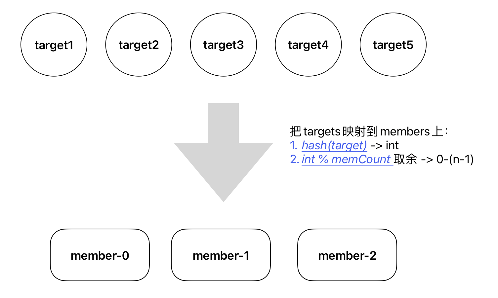
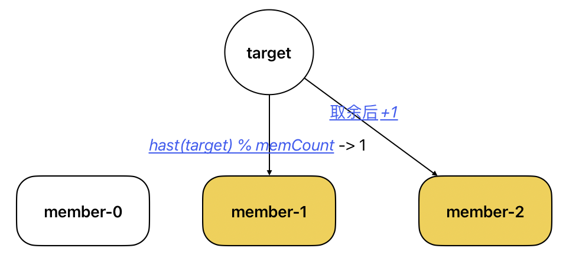

最近在工作中使用了vmagent来收集指标。vmagent具有集群模式，允许配置多个实例来采集相同的一群目标。与Raft协议集群不同，vmagent实例在设置了-remoteWrite.disableOnDiskQueue后可被视为无状态，因此无需复杂协议来维持成员状态一致。主要挑战在于如何将需要采集的目标分配到各个成员中。
本文参考源码介绍vmagent集群模式的细节，回答以下问题：
- targets如何在集群成员中分配
- 如何使用StatefulSet部署vmagent集群
target如何在成员中分配
vmagent集群模式最重要的参数有两个：
在探究具体原理前，我们先看一个简单的例子：
1
2
3
4
5
|
# 启动成员0
/path/to/vmagent -promscrape.cluster.membersCount=2 -promscrape.cluster.memberNum=0 -promscrape.config=/path/to/config.yml ...
# 启动成员1
/path/to/vmagent -promscrape.cluster.membersCount=2 -promscrape.cluster.memberNum=1 -promscrape.config=/path/to/config.yml ...
|
如上例所示，创建集群成员时，需指定成员总数（membersCount）和当前成员编号（memberNum），同时所有成员的scrape配置必须相同，这是vmagent集群的全部必要信息。
vmagent首先解析scrape配置以生成所有targets，这些targets以各个标签的形式存在。然后将targets分配给集群中的各成员进行采集。问题可简化为：如何将m个targets分配给n个成员，确保每个target都被分配到1个成员。vmagent通过将每个target转换为整数，然后对成员总数取余来实现这一过程，如下图所示：

源码如下：
1
2
3
4
5
6
7
8
9
10
11
12
13
14
15
16
17
18
19
20
|
func getClusterMemberNumsForScrapeWork(key string, membersCount, replicasCount int) []int {
...
// 对target的labels做哈希运算 -> h
// h取模 -> idx
h := xxhash.Sum64(bytesutil.ToUnsafeBytes(key))
idx := int(h % uint64(membersCount))
...
// memberNums为需要采集此target的memberNum列表
// idx余数作为需要采集此target的memberNum
// 如果replicasCount大于1，idx++作为另一个需要采集的memberNum，以此类推
memberNums := make([]int, replicasCount)
for i := 0; i < replicasCount; i++ {
memberNums[i] = idx
idx++
if idx >= membersCount { // 边界处理
idx = 0
}
}
return memberNums
}
|
如果replicasCount>1，需要把target分配到多个成员，vmagent采取了一种简单的方法，即将编号+1的下一个成员处理，依此类推，如下图所示：

如果target恰好分配给最后一个成员，则下一个成员的编号为0，即重新开始。

使用StatefulSet部署vmagent集群
明白了集群的原理，下面来介绍如何使用StatefulSet部署vmagent集群。通过 memberNum指定成员编号时，可以把编号放在名称的最后，用 - 和前面的字符隔开。这样我们通过StatefulSet
我们知道StatefulSet创建的pod名称格式为：{podName}-{Num}，memberNum 选项支持通过这种格式定义成员编号。这里直接放出源码展示其原理：
1
2
3
4
5
6
7
8
9
10
|
func mustInitClusterMemberID() {
s := *clusterMemberNum
// 把左右 - 后面的数字作为成员编号
if idx := strings.LastIndexByte(s, '-'); idx >= 0 {
s = s[idx+1:]
}
n, err := strconv.Atoi(s) // 如果 - 后面的不能转化为整数，这里会报错
...
clusterMemberID = n
}
|
这里直接给一个StatefulSet部署vmagent集群的例子：
1
2
3
4
5
6
7
8
9
10
11
12
13
14
15
16
17
18
19
20
21
22
23
24
25
26
27
28
29
30
31
32
33
34
35
36
37
38
39
40
41
42
43
44
45
46
47
48
49
50
51
52
53
54
55
56
57
58
59
60
61
62
63
64
65
66
67
68
69
70
|
apiVersion: apps/v1
kind: StatefulSet
metadata:
namespace: default
name: vmagent
spec:
selector:
matchLabels:
app: vmagent
serviceName: vmagent
replicas: 2
template:
metadata:
labels:
app: vmagent
spec:
containers:
- name: vmagent
image: docker.io/library/vmagent_darwin:v1.99.0 # 换成自己镜像仓库的地址
imagePullPolicy: IfNotPresent
args:
- "-promscrape.config=/vmagent/vmagent.yml"
- "-remoteWrite.url=http://10.10.10.10:9090/api/v1/write"
- "-promscrape.config.strictParse=false" # 可以直接解析prom的配置
- "-remoteWrite.disableOnDiskQueue" # 不保存数据到本地
- "-promscrape.suppressDuplicateScrapeTargetErrors" # 压制pod暴露多个port导致target重复Error
- "-promscrape.cluster.membersCount=2" # 集群成员数量
- "-promscrape.cluster.memberNum=$(POD_NAME)" # 集群成员编号，从0开始
- "-envflag.enable=true"
- "-envflag.prefix=VM_"
ports:
- containerPort: 8429
protocol: TCP
volumeMounts:
- mountPath: "/vmagent/"
name: vmagent-config
env:
- name: POD_NAME
valueFrom:
fieldRef:
fieldPath: metadata.name
- name: node-exporter
image: bitnami/node-exporter:latest
imagePullPolicy: IfNotPresent
resources:
limits:
memory: "128Mi"
cpu: "500m"
ports:
- containerPort: 9100
volumes:
- name: vmagent-config
configMap:
name: vmagent-config
items:
- key: vmagent.yml
path: vmagent.yml
---
apiVersion: v1
kind: Service
metadata:
name: vmagent
spec:
clusterIP: None
selector:
app: vmagent
ports:
- port: 8429
targetPort: 8429
|
总结
vmagent 如何分配 target 到各个成员：
- 对 target 标签进行哈希运算得到一个整数
- 对该整数和成员数量取余，得到分配给 traget 的成员
- 如果副本数为2，那么编号加1的成员也会被分配
- 如果遇到最后一个编号，将从头开始分配
这个集群实现的优点很明显，实现简单，如果targets非常多，确实可以分散采集负载，降低单个成员的采集压力。
缺点也同样明显，如果vmagent集群中某个成员挂掉，集群中其他成员无法感知，也无法代替它采集这部分targets，会导致丢失部分targets指标。解决办法就是设置副本数，本质上是通过数据冗余来解决高可用问题。
参考
vmagent官方文档
vmagent介绍
文章作者
上次更新
2024-03-17
(4cb6b26)